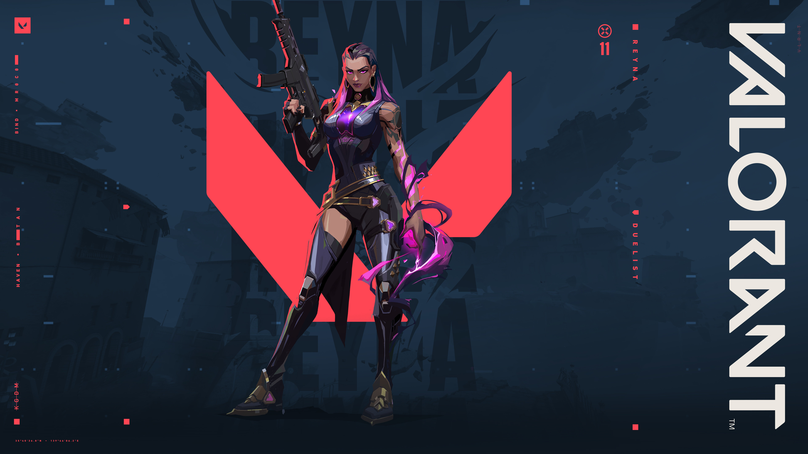

Reyna abilities explainedReyna abilities explained
Reyna abilities explainedReyna abilities explained
Passive(soul orb)-Enemies killed by reyna leave behind soul orbs that last 3 seconds.It has 2 charges.U can use the abilities devour and dismiss with the help of this soul orb.
Ability 1(devour)-When we press Q on the orb we get rapid healing.If u have max health it will heal ur shields if u are shields are less than 50,but this shield boost decays overtime.
Ability 2(dismiss)-When we press E on the soul orb left by the enemies,we become invincible for a short amount of time.There will be a bar on ur screen that shows the amount of time that u remain invincible.You can use this orb when fighting 2 people at once as u can kill one and use dismiss to get out of the situation
Ability 3(leer)-This ability is a destructible eye that is a flash.The enemies who look at it get flashed.Your teammates don't get flashed and It can be used to enter a site and can be used agressively.
Ultimate(Empress)-When u use the ultimate,u go into a state where ur firing rate of the gun u are using increases,the equip time of the gun and also the reloading speed of the gun decreases.U also have infinite soul orbs in this state.